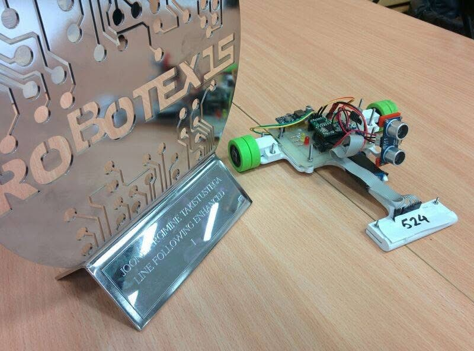
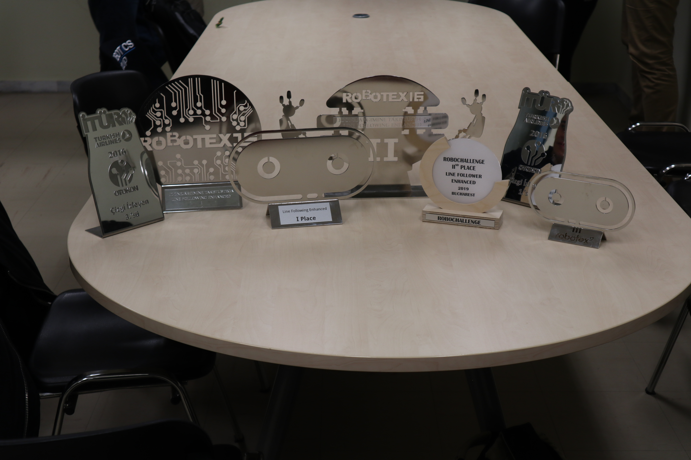
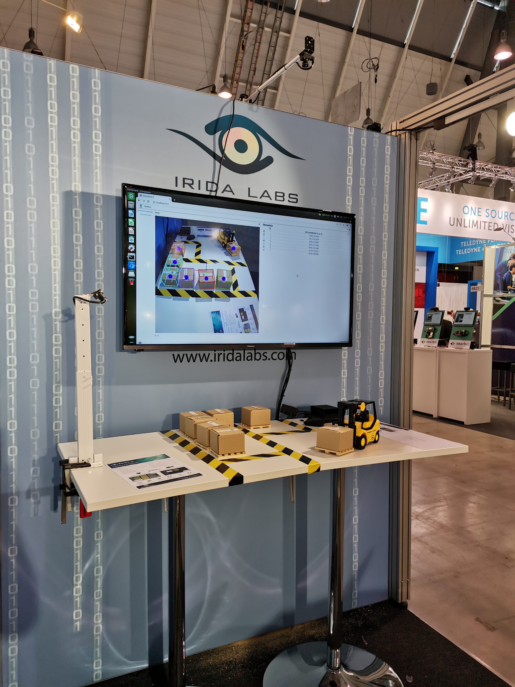

About Me
I hold an MEng in Computer Engineering and Informatics from the University of Patras (Greece) and an MSc in Computer Science from TU Delft’s Faculty of Electrical Engineering, Mathematics and Computer Science (EEMCS).
Based in Patras, Greece, I’m a Senior Computer Vision Engineer at Irida Labs. I build end-to-end computer vision solutions—covering optics and hardware choices, model training, data management, and low-latency edge deployment—for industrial applications.
My core expertise is monocular 6D pose estimation at the intersection of deep learning and classical computer vision. I design pipelines that extract maximum signal from a single RGB image—combining robust feature learning with geometric reasoning and refinement—to recover accurate object pose. Monocular vision reduces system cost and complexity while enabling precise localization for manipulation, inspection, and guidance; when engineered well, it approaches RGB-D performance with far simpler hardware.
In deep learning and AI, I take a data-centric approach: curating datasets, generating synthetic samples, and enforcing rigorous evaluation. I build and fine-tune models with an emphasis on reliability and efficient inference (pruning/quantization) for edge deployment. I also apply MLOps practices to monitor drift and ensure repeatable, maintainable production systems.
In my leisure time I develop autonomous mobile robots, using visual data for perception and navigation. I perform simultaneous localization and mapping to build consistent maps and maintain reliable positioning. For navigation, I design and implement planning and control strategies with safety layers. I also develop educational material on autonomous driving for high-school and undergraduate students, including hands-on labs and open-source examples.





